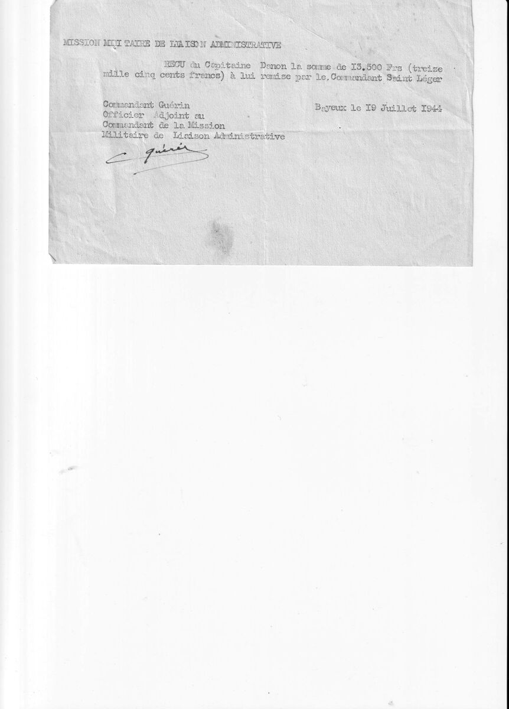

Un feuillet, six lignes, une signature. Le 19 juillet 1944, à Bayeux, le commandant Guérin, officier adjoint au commandant de la Mission militaire de liaison administrative, atteste que le capitaine Danon a reçu treize mille cinq cents francs remis par le commandant Saint Léger. Claude Adolphe Georges Saint-Léger (1897-1944) sert alors comme officier de liaison administrative auprès du 8e Corps britannique, engagé dans le Bocage. La pièce ne dit ni d'où vient cette somme ni à quoi elle est destinée. Son intérêt est ailleurs : elle date sa présence à Bayeux, au quartier général de la mission, et elle le désigne comme commandant six semaines avant la date que retiennent ses états de service.
Le contexte
Bayeux, prise intacte le 7 juin 1944, est le siège de l'administration française en Normandie libérée. François Coulet y est installé comme commissaire de la République dès le 14 juin, et la Mission militaire de liaison administrative du colonel Claude Hettier de Boislambert y établit son échelon de commandement. C'est de là que partent les instructions aux officiers de liaison dispersés auprès des états-majors britanniques et américains.
La question de l'argent est alors politiquement brûlante. Les Alliés ont fait imprimer des billets pour leurs troupes en France, que le Gouvernement provisoire dénonce comme de la fausse monnaie parce qu'ils ont été émis sans l'accord d'aucune autorité française. Les officiers de la mission se trouvent au point de contact entre deux trésoreries et deux souverainetés. Ils avancent des fonds aux municipalités privées de ressources, règlent des réquisitions, transportent des espèces d'un poste à l'autre faute de circuits bancaires.
Ce reçu est un acte de comptabilité ordinaire dans cette situation extraordinaire : un officier remet une somme à un autre, un troisième en atteste par écrit. Rien n'indique la nature de l'opération, et rien n'autorise à la reconstituer. La pièce vaut par ce qu'elle prouve, non par ce qu'elle raconte. Elle établit un déplacement, une date, un grade et deux noms d'officiers de la mission que le fonds ne connaissait pas.
Dates repères, juillet 1944
17 juin 1944 : débarquement de Claude Saint-Léger en Normandie, d'après la fiche de renseignements MMLA du 15 août.
23 juin 1944 : il se présente au quartier général des Affaires civiles du 8e Corps britannique, à Lantheuil. Le journal de marche le porte comme lieutenant.
1er juillet 1944 : le même journal de marche le porte désormais comme commandant, et il cesse d'être rattaché au détachement 218 pour opérer à l'échelon du Corps.
18 juillet 1944 : le colonel Chandon, à Bayeux, signe pour la mission une note de service sur le rôle des officiers de liaison administrative.
19 juillet 1944 : le reçu, à Bayeux.
20 juillet 1944 : le lieutenant-colonel Lion transmet la note de service aux chefs de mission auprès de la 2e Armée britannique.
1er septembre 1944 : ses états de service le font exercer les fonctions de chef de bataillon à compter de cette date.
Bayeux, Calvados. Feuillet dactylographié à en-tête, signé à la main.
MISSION MILITAIRE DE LIAISON ADMINISTRATIVE
RECU du Capitaine Danon la somme de 13.500 Frs (treize mille cinq cents francs) à lui remise par le Commandant Saint Léger
Commandant Guérin Officier Adjoint au Commandant de la Mission Militaire de Liaison Administrative
Bayeux le 19 Juillet 1944
C. Guérin

Le reçu délivré à Bayeux le 19 juillet 1944, signé du commandant Guérin. Archives familiales.
Sources
Reçu dactylographié à en-tête de la Mission militaire de liaison administrative, Bayeux, 19 juillet 1944, signé C. Guérin. Archives familiales.